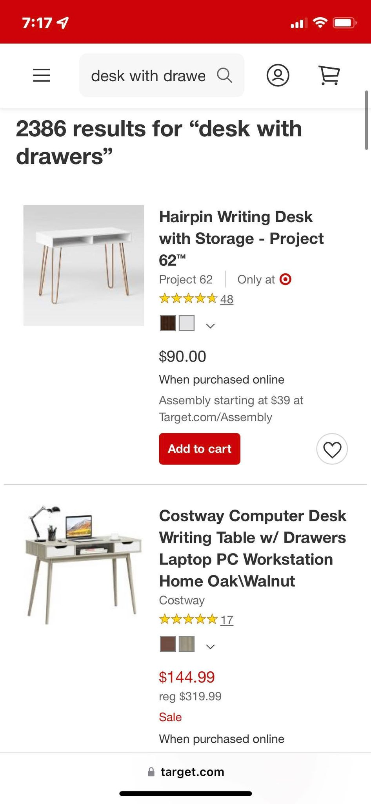
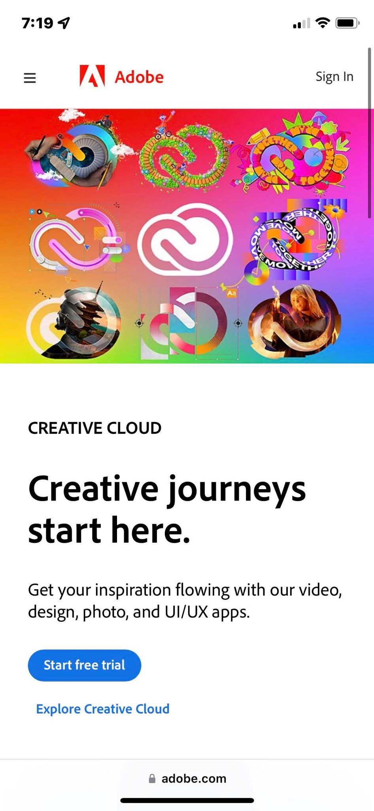
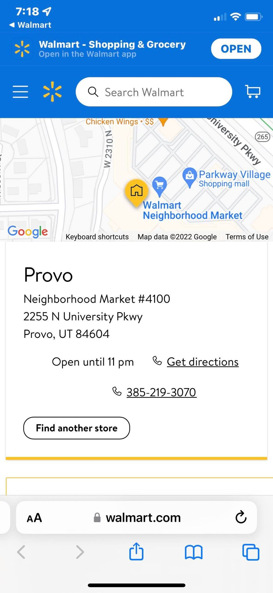

Repetition
On this product page, there are many different product displays on the page, but each of them has the same design and layout for the customer to find the key information faster. Repetition ready shows its importance on this page.
White Space and Clean Design
Adobe really knows what they are doing when it comes to designing. Their mobile site looks clean and organized, thanks to them utilizing the withe space, visitors like me could quickly get the idea of their message, and find the interactive bottoms they want me to find.
Fitt's Law
Like all big company's site designs, Walmart knows the importance of fitt's law. On this page, they make sure that the links are on the right side, since that is easier for right-handed people to click on, and they limited the options to interact with to three, which makes the choosing time very short for customers.